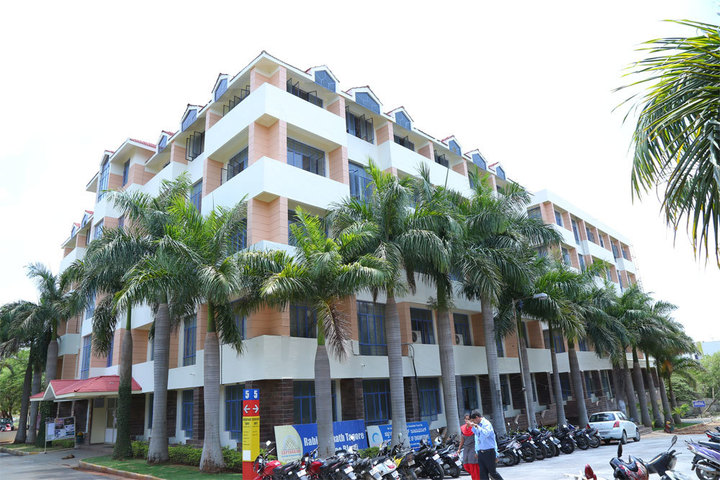

Sapthagiri College
Table of Contents
About Sapthagiri College
Sapthagiri College of Engineering, Bengaluru, is one of the “Best Technical Institutes” in India and around the world also.
It has accomplished astounding development in the course of the most recent 18 years, contributing to the improvement of India and world by contributing the “Best Strong Technical Engineers” in the field of Different Engineering discipline in a time of cutting edge innovations and new methods, we constantly take a stab at advancement and upgraded productivity by fostering the understudy’s abilities as for the mechanical capability in gifted way.
Facilities are youthful and advanced in the corporate world specialized experience sponsored by phenomenal scholarly mastery.
A profoundly devoted exertion is made to the understudies in getting situations just as directing and aiding those, who need to be a business person.
College amazingly favored to lead the establishment, which is an undisputed pioneer in the field of specialized schooling and examination. We constantly update the benchmark through the most recent showing instruments, World class preparing modules, Exploration of new examination roads to adapt to truly changing corporate and education situations in cutthroat climate.
The College believes that our Initiative will create an academic foundation for Social, Cultural, Scientific, Economic and Technological development in our Nation which will mature into Global Interface. Therefore, our focus is to achieve unparalleled excellence that will bring development to our society and mankind by optimizing the potential of students.
Sapthagiri College BPT Courses
Bachelor of Physiotherapy or BPT is an undergraduate program which is of 4-year term including obligatory a half year of clinical internship. This program includes the study of actual development pointed toward forestalling illness and incapacity.
To be qualified to apply to this program, applicants are needed to have passed Class 12 or equal in important order from a perceived board.
Admission Process in Sapthagiri College for BPT
Candidates are offered admission to this program in India mostly based on performance in a relevant institute-specific entrance test.
Often subsequently, two additional rounds of conference and private interview are held for assessment of the candidate’s general aptitude for the course.
For filling online, candidates got to attend the administrator website of the concerned entrance examination and fill the wants.
After that, a print out of the completed form is to be taken out. The print out alongside the obligatory documents and DD of the amount is required to be sent to the relevant exam body.
For offline applications, candidates get to get the shape alongside the brochure from the exam conducting body or from the designated centres and may finish the formality.
There is no Bachelor of Physiotherapy (BPT) specific All India Entrance Exam. NEET and AIIMS do not conduct tests for the Bachelor of Physiotherapy (BPT) admissions.
Sapthagiri College BPT Eligibility Criteria
Candidates seeking admission to Bachelor of Physiotherapy (BPT) need to fulfil the minimum eligibility criteria listed below:
Higher Secondary (10+2) or equivalent qualification from a recognized university.
The candidate should have pursued science stream with Physics, Chemistry and Biology as main subjects.
A minimum aggregate score of 50% or equivalent CGPA at the 10+2 level (45% for SC/ST/OBC candidates).
Fee Structure of Sapthagiri College
| Courses | Fees (Yearly) |
|---|---|
| BPT | 8250 |
About Sapthagiri College MPT
The Masters Degree in Physiotherapy is a 2-years program consisting of classroom educating, self academic exercises and clinical posting.
In the primary year the hypothetical premise of physiotherapy is invigorated alongside research strategy and biostatistics.
The understudies are pivoted in every aspect of clinical aptitude during this period.
Students are needed to pick their examination for their thesis and present a summary.
During the second year the students will be posted in their space of claim to fame. They are needed to finish and present their exposition.
The learning program incorporates workshops, diary audits, case introductions, case conversations and study class teaching.
A portion of the clinical postings are given in other rumored focuses in the country to offer a more extensive range of involvement. The understudies are urged to go to meeting, workshops to upgrade their insight over the span of study.
College assessments are held toward the finish of first year and toward the finish of second year.
Eligibility Sapthagiri College
The Masters Degree in Physiotherapy is a long term program consisting of classroom instructing, self scholarly exercises and clinical posting.
In the first year the hypothetical premise of physiotherapy is invigorated alongside research technique and biostatistics.
Students are pivoted in every aspect of clinical expertise during this period.
Students are needed to pick their examination for paper and present an abstract.
During the second year the students will be posted in their space of forte. They are needed to finish and present their thesis.
The learning program incorporates courses, diary surveys, case introductions, case conversations and study hall education.
A portion of the clinical postings are given at other presumed focuses in the country to offer a more extensive range of involvement. The understudies are urged to go to gathering, workshops to upgrade their insight over the span of study.
College assessments are held toward the finish of first year and toward the finish of second year. Below is the qualification measures for MPT or Master of Physiotherapy course to the standards of Rajiv Gandhi University of Health Science, Bangalore (RGUHS).
2. Marks
The admission of students to a Master of Physiotherapy course shall be based on merit provided that:
- Candidates have secured BPT or B.Sc Physiotherapy degree with minimum of 50% marks in aggregate.
Fees Structure of MPT Course in Sapthagiri College
| Course | Fees (Yearly) |
|---|---|
| MPT Course | 2 lakhs to 3 lakhs |
Sapthagiri College for Paramedical Course
You can get admission through management quota admission in Sapthagiri College of Pharmacy. For Admission Guidance in Sapthagiri College of Pharmacy, you can contact us.
- Highly qualified faculties.
- Hospital with modern technologies
- one of MOST popular medical college in BANGALORE
###**Admission Procedure**:
- A good knowledge of ENGLISH is essential.
- The completed application form should be submitted along with a photocopy of the following:
- B.Sc. Nursing Certificates (for PG)
- SSLC and PUC Certificates
- Migration Certificates
- Transfer Certificates
- 5 passport size photographs
Placement Experience: 8th semesters students become eligible for campus placement. Several companies visit to grab doctors for their hospital in the company sector as the railways, airlines, iron industries, ship industries and incorporate hospital. 2. Highest package is around 6 to 10 lakhs per month as a professional senior doctor and 2 to 3 lakhs as a junior. 3.95 % of students get jobs and practice in private or government sectors. 4. Going to foreign for FRCS and be a surgeon.